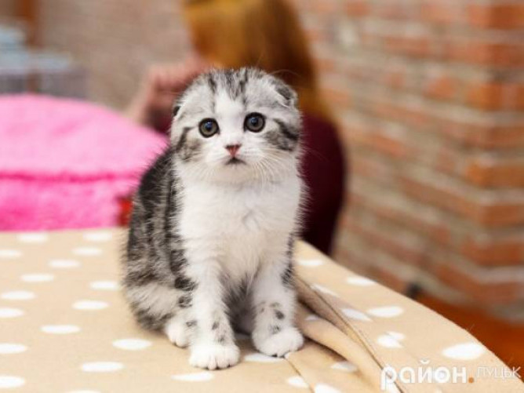

1. Майже 2/3 доби кішки витрачають на сон. Так, кіт, який прожив 9 років, 6 із них проспав.
2. Більшість кішок є правшами, а більшість котів – лівшами.
3. У світі живуть понад 500 млн домашніх котів. Сама "котяча" країна – це Австралія. Там на 10 осіб припадає 9 котів.
4. Давньоєврейська легенда свідчить: у ковчезі Ноя розплодилися миші та пацюки, які знищували їжу. Ной почав молитися Богу, щоб той приструнив гризунів. Бог у відповідь на молитви змусив лева чхнути – і з пчиху лева з'явився кіт.
5. Звичайна домашня кішка здатна бігати зі швидкістю до 50 км/год, правда, тільки на короткі дистанції.
6. Кішка може стрибати на висоту, яка вп'ятеро перевищує її зріст. у світі порода. На другому місці йдуть Мейн-куни, а на третьому – сіамські кішки.
7. Перська кішка - найбільш популярна
8. У більшості країн Європи й Північної Америки зустріч із чорною кішкою вважають передвісником неприємностей. А от англійці й австралійці вірять, що чорні пухнастики приносять удачу.
9. Стародавні єгиптяни, коли їх домашня кішка вмирала, в знак жалоби збривали брови. Мертвих котів бальзамували й ховали в родинній гробниці. Щоб киця в загробному царстві не голодувала, поряд із мумією кішки клали кілька мумій мишей.
?10. У даний час найбільшою кішкою вважають амурського тигра. Така кицька може досягати 3,5 м у довжину й важити понад 300 кг.
11. Не всі кішки бояться води. Так, кішка породи "турецький ван" любить купатися, так як її шерсть все одно водонепроникна.
12. В італійському оригіналі казки про Попелюшку, добра фея - хрещена головної героїні, була кішкою.
13. Кішки не можуть рухати щелепами з боку в бік, тому їм не вдається прожувати занадто великі шматки їжі.
14. Цікаво, що кішки нявкають лише при спілкуванні з людьми. На своїх побратимів кішка може шипіти, фиркати чи муркотіти. А ось нявкати не буде ніколи
.15. У кішок кігті на передніх лапах гостріші, ніж на задніх. У спокійному стані всі кішки, крім гепарда, ховають кігті. Гепарди ж втягувати кігті не вміють.
16. Кішки можуть повертати свої вуха на 180 градусів, адже їх зовнішнім вухом управляє аж 32 м'язи. Для порівняння - в людини таких м'язів всього 6.
17. У тілі людини налічується 206 кісток, а в тілі кішки – 230, тому вони набагато пластичніші, ніж ми. Оскільки в кішок немає ключиць, вони цілком можуть пролазити в отвори, в які пролазить їхня голова.
18. "Відбиток носа" в кожної кішки настільки ж унікальний, як відбитки пальців у людини.
19. Серце у кішок б'ється майже вдвічі швидше, ніж у людей (110-140 ударів у хвилину).
20. Кішки можуть пітніти тільки через подушечки лап. На інших ділянках тіла в них немає потових залоз.
21. Кішки, вилизуючи свою шерсть, витрачають на це стільки ж рідини, скільки й на сечовипускання.
22. Для кішок абсолютно нормальна є температура тіла 38 градусів.
23. Очі наших домашніх улюбленців крупніші щодо тіла, ніж у інших тварин. Якби в людини були такі ж очі як у кішки (щодо тіла), то їх діаметр дорівнював би 5 см.
24. Коти не добре розрізняють дрібні предмети поблизу. Саме тому кішка не бачить ласого шматочка прямо під носом.
25. Колір очей кошеня змінюється з віком. Усі кошенята народжуються блакитноокими, в 2 тижні відкривають очі. При цьому очі каламутні і майже нічого не бачать. А до місяця забарвлення очей кошеня набуває остаточний колір. Тому, беручи блакитноокого кошеня, багато господарів отримують кароокого чи жовтоокого вихованця.
26. З породи котячих, наші улюбленці єдині, хто при ходьбі тримають хвіст вертикально. Дикі кішки тримають хвіст горизантально або опущеним між ніг.
27. За одну вагітність кішка може виносити кошенят від різних батьків. Але вважають, що всі кошенята будуть схожі на першого кота, з яким у кішки сталася злучка.
28. Коли кішка настає, як нам здається, на всю поверхню лапки, насправді, вона спирається на пальці. Кішки розчепірюють пальці й перибирають лапками, коли отримують задоволення.
29. Чим більше людина спілкується зі своєю улюбленицею, тим частіше кішка "відповідає", нявкаючи у відповідь.
30. На загривку кішки є спеціальні рецептори, при вплив на які кішка розслабляється і підтискає лапки до тулуба. Ці рецептори особливо активні в кошенят і дозволяють кішці-мамі переносити кошенят із місця на місце. Але людині цього робити не варто. Без травм і наслідків це може зробити тільки кішка-мама зі своїми кошенятами.
